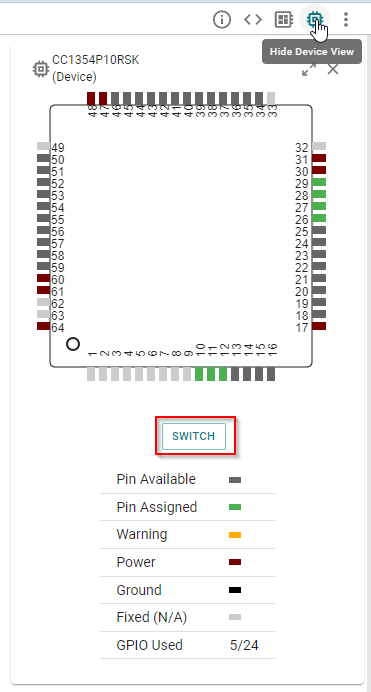
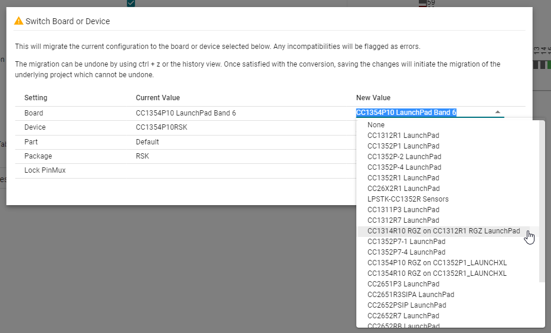
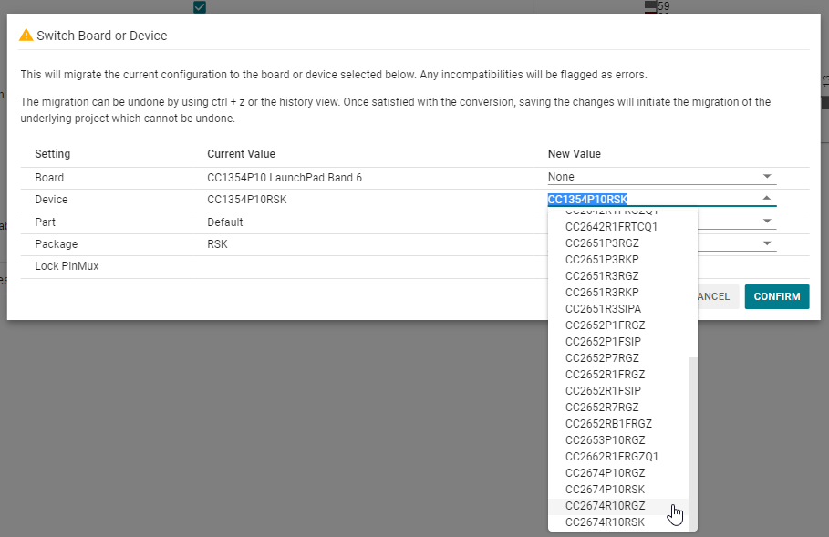
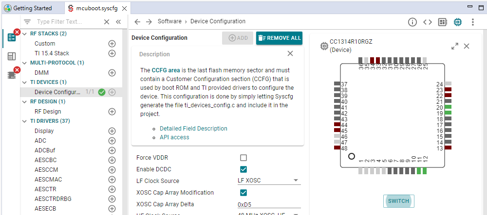
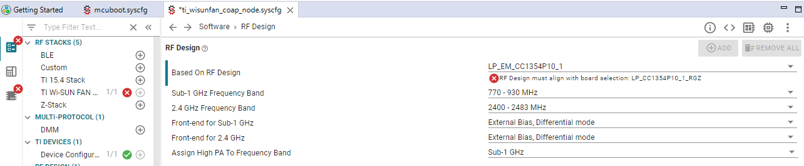

CC13x4 and CC26x4 RGZ Variants¶
CC13x4 and CC26x4 devices come with a 7x7 mm package variant, the RGZ variant. Since there is no launchpad with this device offered, please follow below recommendations. Use soldering to remove the CC13x2 or CC26x2 device from the board and replace it with your CC13x4 or CC26x4 RGZ device. The table also tells you which SDK examples folder to look in when starting your software development.
Device |
LaunchPad |
Software example folder |
|---|---|---|
CC1314R10RGZ |
CC1312R1_LAUNCHXL |
LP_EM_CC1314R10 |
CC1354R10RGZ |
CC1352R1_LAUNCHXL |
LP_EM_CC1354P10_1 |
CC1354P10RGZ |
CC1352P1_LAUNCHXL* |
LP_EM_CC1354P10_1* |
CC2674R10RGZ |
CC26X2R1_LAUNCHXL |
LP_EM_CC1354P10_1 |
CC2674P10RGZ |
CC1352P_2_LAUNCHXL |
LP_EM_CC1354P10_6 |
* For P variants, choose the LaunchPad which corresponds to your rf design.
For CC26x4 users, it may be helpful to take a look at the Migrate software examples from CC13x4 to CC26x4 guide.
When you have soldered your LaunchPad and are ready to start software development, select a software example from the corresponding folder. We will open SysConfig and switch the board or device to he RGZ variant. Depending on the specific example project you are working on, additional steps may be required.
Open your example’s sysconfig file, whether it’s inside CCS, standalone sysconfig or from IAR.
Press the SWITCH button.
Press the dropdown menu for New Value for Board. If your board is available, select it. If not, select None.
If your board was available, skip to 5. If not, open the dropdown menu for New Value for Device and select your device.
Press Confirm. Save your sysconfig file. For certain examples these are all the required steps and you can go ahead and build your example.
If you have errors in SysConfig, you’re not done yet. Errors will show up as small red crosses. For each error, open the sysconfig module and take the required action. E.g. verify your GPIOs on the new board and make required changes or suppress/accept the error.
Most errors will be easy to fix. Like this one, where the required action is to select the Based on RF Design drop down menu and select the correct option.
Accept all remaining errors where no changes are required.
If you encounter an error that’s not explained, in most cases the easiest approach is to remove the sysconfig object and make a new one with the same name and configuration.
When you have resolved all sysconfig errors you should be able to build your project. One exception; when migrating to a CC26x4 device there are additional steps required which are dercibed in this guide: Migrate software examples from CC13x4 to CC26x4 .